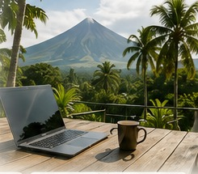

Remote work
Join meetings, access cloud systems and work when needed.
CONNECTED WHEN YOU NEED IT
Being far from home does not mean being disconnected. Stable fiber internet makes it easier to work, call family, stream, use social apps and back up the photos and videos you collect along the way.

FIND YOUR BALANCE
Use FaceTime, Messenger, WhatsApp and other calling apps to keep in touch. Join a work meeting, upload photos and video, or simply stream something familiar after a long day outside.
The point is not to stay online all day. It is knowing that the connection is there when you need it.
USE IT YOUR WAY
Join meetings, access cloud systems and work when needed.
FaceTime, Messenger, WhatsApp and other calling apps.
Upload memories to OneDrive, Google Drive, iCloud or your preferred cloud.
Music, movies, social media and your usual online services.
LONGER STAYS
High-speed internet is part of the stay.
IncludedNo separate Wi-Fi fee for guests.Stay longer without completely stepping away from work.
FlexibleTell us if remote work is important to your trip.Use Sogod Stay as a comfortable base rather than rushing through the region.
Ask about longer staysAvailability depends on your dates.STAY LONGER · TRAVEL SLOWER
Tell us your dates and whether you need reliable internet for work or a longer stay.
Plan a longer stay